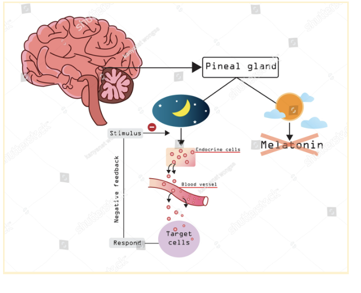

Is Melatonin Worth It
Is Melatonin really worth the cost?
Are you one of the 255 million Americans who contribute to the growing global $151.9 billion Dietary Supplement industry? The typical American spends over $500 per year, averaging a whopping $95 per trip to the grocery store or pharmacy on vitamins and supplements. But how much of this money is spent on things our bodies actually need? As the emergence of melatonin as the primary treatment for sleep has become prevalent, we are left questioning whether people are just wasting their money on yet another useless supplement. Or do the benefits outweigh the extreme grocery bill?
It all began on the morning of July 27, 2023, in sunny St. Petersburg, Florida. I was waking up on the first day of a National meet, thrilled with my quality of sleep from taking a 10mg melatonin the night before and calm my pre-race nerves. As I look over to the other side of the room, I see my friend, Molly, puffy eyed, and looking more exhausted and dissheveled than if she had not slept at all. As she struggled to get the words out of her mouth, she sleepily yet angrily informed me that she could “never take melatonin ever again. This is a first and last for me.”
What is melatonin?
There is no worse feeling than staring at the ceiling after an exhausting day. You grow anxious as the deep feeling of regret from staying up overwhelms your mind, knowing you will be exhausted waking up in the morning. Reaching for a pill, gummy, patch, or melatonin tea at night may be the solution to preventing your morning sleep anxiety. Our bodies naturlly produce, melatonin at a rate of .3mg per 24 hours, almost all of it being secreted by the pineal gland during hours of darkness. Consequently, light inhibits the production of melatonin. As a hormone, it promotes the regulation of our circadian rhythm, and therefore sleepiness at night. Twenty-four-hour circadian rhythms of sleeping and waking, body temperature (highest in the afternoon), cortisol (highest at dawn), prolactin (highest during the night), melatonin (absent during the day), and intellectual performance (best at midday) can most commonly be affected by jet lag, blindness, and being awake for long periods of time during the night.
What is melatonin recommended for?
If you experience sleeping problems related to delayed sleep-wake phase disorder and jet lag, melatonin may give you the clearest potential benefits. Delayed sleep-wake phase disorder is a circadian rhythm disorder in which a person’s sleep schedule is regularly shifted later, often by a matter of hours. For people with this “night owl” schedule, it can be hard to get enough sleep if they have obligations, work, school, or athletics that force them to wake up early in the morning. Studies have indicated that low doses of melatonin taken before the desired bedtime can help people with delayed sleep-wake phase disorder adjust their sleep cycle forward. Unfortunately, this means melatonin may not work as desired when staying up too late cramming for a test, or purely insomnia. However, it seems as though everyone these days is taking melatonin, especially students and athletes.
Melatonin Usage at Westminster
In an anonymous survey of Westminster’s Sixth Formers, Alice Liu ‘23, a daily melatonin taker last spring and summer, remarked that taking melatonin at night “didn’t really work. I took it as more of a mental comfort to think I was getting better sleep.” She experienced tiredness during the day because it did not actually affect her quality, or truly the amount of sleep she was getting. This is because supplemental melatonin shouldn’t be the primary treatment for insomnia. She found it easier to stop taking melatonin in the summer when she had fewer obligations and therefore could afford to stare at the ceiling for an extra few minutes without sacrificing a valuable portion of her sleep. Twins Dylan and Mckenzie Bloom ‘23, both impressive student-athletes with busy schedules have never taken melatonin, claiming they “can fall asleep fine without it, usually within 15 minutes of getting in bed.” Both average 8 hours of quality sleep every night, and their circadian rhythms seem to be fully functioning without the use of supplemental melatonin. Paige Smith ‘23, on the other hand, has been taking melatonin every night since sophomore year. When a 10mg dose isn't enough, she reaches for 20mg. Studies have shown that between 1mg and 10mg doses are safe for adults, but approaching 30 mg may be harmful, leaving users like Paige with a higher chance for extreme side effects such as dizziness, mood changes, headaches, digestive distress, anxiety, and joint pain. Melatonin overdose occurs more quickly in young children, who are more susceptible to serious side effects. A dose of between 1mg and 5mg may even be enough to trigger seizures.
The impacts of taking melatonin on physical and mental health may be noticed from days to months, depending on the dose. Women might also see a different response to melatonin according to their menstrual phase.Both Paige and Alice have a shared experience of waking up tired, or groggy the morning after taking melatonin. Additionally, the long-term side effects have yet to be determined, as our bodies take care of releasing the hormone naturally, and hormonal imbalances are very delicate in humans. By adding extra melatonin every night, you risk throwing off that delicate balance over long periods of time and might experience the side effects of the body needing to re-balance, whenever you decide to stop using melatonin.
Although melatonin has not been found to be psychologically or physiologically addictive, it can foster the belief that you need extra melatonin every night in order to get good sleep, just like any other sleep aid. In an anonymous survey of a Westminster Sixth Form Literatrue of Values class, 7 melatonin takers found the supplement physically and psychologically additive, meaning they must take melatonin in order to fall asleep, and feel like they cannot get good enough sleep without it. Chances are, this may be partially due to some placebo effect. 2 students in the class remarked “I’m against it because I’ve heard it’s not real sleep. Basically the sleep we get from it is poor and that most people would be better off just trying to fall asleep.”
- Molly- groggy and reaction from taking melatonin
- Paige